问答
> 桂林3-4天怎么规划行程？当地消费如何？必去景点有哪些？怎么玩最省钱呢？
桂林旅游
打算近期一家人去桂林玩，3-4天行程怎么安排最好？大概要花多少钱？必去景点有哪些推荐下，去过的老铁们分享下经验哦，先谢了
难得和家人去桂林玩几天，一共4个人下周出发，攻略看的挺杂乱的，干脆问问各位去过的达人，行程怎么规划比较好？有哪些必去景点？当地消费贵不贵？不想被坑被宰，那边有什么要注意的吗？
考克斯 -1周前
5个回答
 125
125
-
上个月带老婆和女儿去桂林玩了4天，必去的几个地方都去了，了解了不少当地攻略和该注意的地方，以下是我的经验总结，希望对你有用：
【关于必去的景点】 知名的莫过于漓江游船遇龙河漂流、银子岩溶洞、龙脊梯田、桂林象鼻山基本上大家都会首先去这些景点；
1、【漓江游船遇龙河漂流】，如果说漓江是大家闺秀，那么遇龙河就是小家碧玉了。
2、 【银子岩溶洞】 ，游览桂林喀斯特岩溶地貌典型代表、亚洲美的岩洞 --【银子岩】；
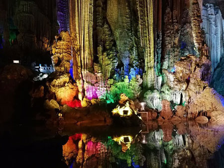 3、 【龙脊梯田】 ，龙脊开山造田的祖先们当初没有想到，他们用血汗和生命开出来的梯田，竟变成了如此妩媚潇洒的曲线世界。
4、 【桂林象鼻山】 ，城徽象鼻山-山因酷似一只站在江边伸鼻豪饮漓江甘泉的巨象而得名，被人们称为桂林山水的象征。； 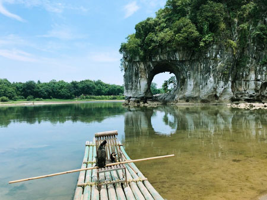这些玩下来大概4天左右，中间的一些交通路线要查好，几个大景点都不在同一个地方，之间还有一定的距离。其它具体的我也不是专家，你可以问问桂林一个叫的当地人，当时的行程就是她帮忙规划的（人挺好的，是携程和马蜂窝论坛的知名规划师）。她对当地非常了解，帮我们规划的4天行程性价比最高了，少走不少弯路,替我们省了不少钱,住的很舒服,4天下来才花了1580元一个人，挺不错的。
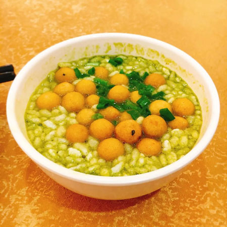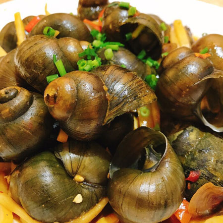 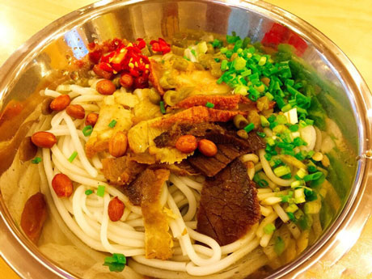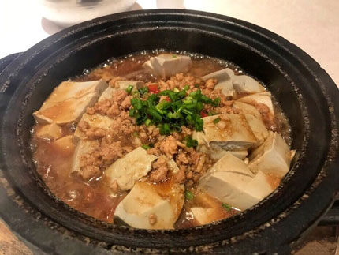 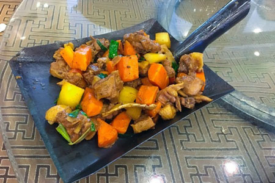
当然旅途中还有不能错过的一大波桂林当地美食（无美食，不旅行…………）
版权名片 ?我是蚂蜂窝的忠实粉丝一枚，自己走过一些地方，写过几篇游记，但因为是屌丝，所以基本都是国内的路线，最长出行为四十天，一般长短线都有走过，以中长线为多，希望自己的一些经历和经验可以帮助到需要帮助的朋友！
 14
14
-
我是成都青鸟自行车俱乐部的驴友，去年8月和女朋友去过桂林，玩了3天，去的是桂林象鼻山、阳朔跟龙脊梯田。桂林现在很火，去的人非常超级多，但接待量有限，记得提前预订以免到了之后到处抓瞎。我们是网上找到1楼所说的那个导游，帮我们安排行程，3天下来改玩的都玩了，花了也不贵，真的挺划算的。
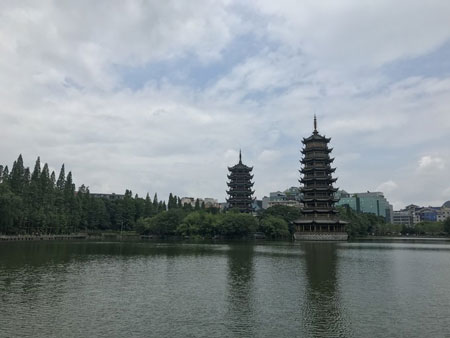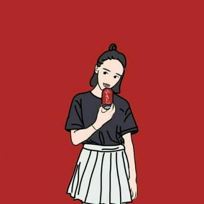小倩LV.34
游玩桂林全景需要几天呢？可靠吗？
唐不换LV.37
回复@小倩： 全部景点大概需要5-6天左右，具体的你可以咨询一下，很可靠，我们的行程安排的很满意，你可以先咨询一下她。
东东LV.34
好像网上口碑挺不错的，专门帮规划行程的？
唐不换LV.37
回复@大壮： 是的，网上口碑也不错，在桂林当地好像蛮出名的。他们很热心帮忙，帮我们省心很多，也省钱不少，值得推荐。这次是带老婆蜜月之旅，安排的行程都很合理，价格也实惠，我们都很满意，哈哈。
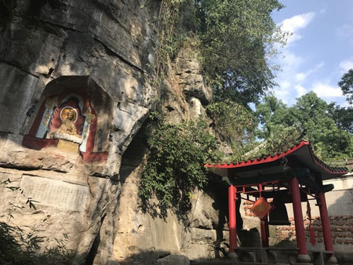
- 41
-
我朋友是广州自驾去的桂林，回来以后说玩的累死了，那边景点多，而且比较分散。后面我去桂林就找到了网上口碑一直不错的导游，帮我们买票带路，玩的很轻松，睡到自然醒，而且还带我们去了遇龙河漂流，竹筏很惬意，一路上都帮我们拍照，很热情可爱的一个女孩子，人很好。反正很开心的一次旅行吧，真的人不错，去桂林找她就对了~
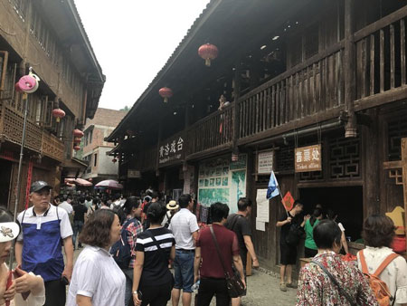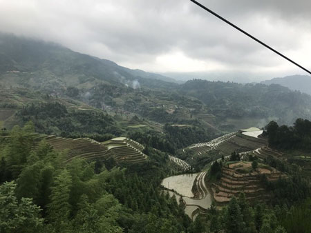Liu啦啦啦LV.34
哇塞看图我都留口水了，是哪家餐厅？正宗么？我下周去桂林玩
飞鱼LV.37
回复@Liu啦啦啦： 你算是问对人了，桂林美食跟景色一样很有名，特别美味，正宗的美食可以叫带你去吃，她是桂林本地人，简直就是美食活地图~~~
Liu啦啦啦LV.34
原来如此，看来做吃货还是要多学习学习，的确找个当地人问问更靠谱点。
小黄鹂LV.37
是的呢，我昨天联系了，刚到桂林，来接的我们，正准备去酒店呢（~是个美女哦，哈哈...）
 5
5
-
5月份从桂林回来的，当时找的就是带我们玩的。我们本来是计划自己玩的，看了几篇攻略游记后彻底头晕了...刚好有个哥们说联系过安排行程，觉得服务、人品都不错，而且我也觉得这种自由行很不错，就试着联系了一下，没想到她很快就把桂林景区的大概分布讲清楚，行程怎么规划、带什么东西都讲的很详细，真的非常专业!而且经常聊到凌晨一两点，她都会回我！挺感动的...在桂林的几天真的玩的超开心，其实旅行途中，景点并不重要，重要的是你和谁一起旅行，的性格很豪爽、可爱。去桂林的可以找她，服务和人品真的超赞的。
徐小兮LV.34
其实桂林适合自助游，想省心的玩的好点的可以直接找个当地向导，想怎么玩就怎么玩，想去哪去哪，比旅行社玩的要自在多了，现在的旅行社除了带你买东西还能干点别的么...
- 6
-
5月去的桂林，被漓江真心值得一玩，象鼻山也很美，美得让人狂刷抖音停不下来...我们去的时候也是找楼上说的规划的行程，也是帮安排的呢，比自己玩省心很多。我们让安排了一台车和导游，全程自己玩，不赶路，睡到自然醒，喜欢这种自由旅行的方式（比找旅行社天天强制购物玩的爽多了），全程推荐的住宿也很不错，舒心，点个赞。
荣京：LV.34
去桂林玩，住哪里比较好？
季恩妮LV.37
回复@荣京： 住宿这个可要考虑好，桂林景点很分散，别定错了，免得走回头路，坐回头车。具体住哪里肯定和行程相关，具体也可以直接问，当地人肯定更专业点。
- 11
-
反正我是觉得出去玩，千万不要在旅行社报团，全都是坑。上次我去九寨沟，报的一家旅行社的团，出发前什么都说的很好，价格也不便宜。等到九寨沟才知道，在景区的时间根本没多少，都是在购物店，我们没买什么东西，导游就立马翻脸，搞得一路玩的心情都没了。出门旅游，玩的开心是最重要的。
- 12
-
我们上次好多人去桂林本来是打算自己玩的，做了好多攻略都没搞清楚，最后索性在网上联系了很多人推荐的，没想到马上帮我们安排好了行程，他们真得还蛮专业的，据说以前都是导游出身的，都是桂林本地人，现在专门在携程、途牛网做当地向导自由行服务！服务也是很不错，对景区的讲解也很专业，楼主如果你要去桂林的可以联系她。
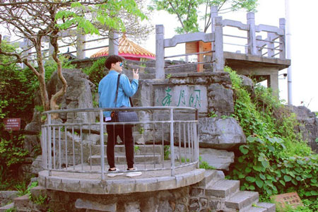端纳：LV.34
纠结中...一直想去桂林玩，可是工作一直太忙，抽不出时间。
大鱼海棠LV.37
回复@端纳： 纠结啥呢，我们也是没时间，不然肯定也去桂林看看，我表妹去过那里，说桂林非常值得去看看去玩玩。结合你的具体时间，听说3天也可以桂林都玩完，我们觉得太赶才没这么玩，你可以问问，他们帮你参考下呗。

飞鸟：LV.34
谢谢，我已经联系上了，让他给我们安排的行程，非常感谢，就等着去桂林啦
- 10
-
桂林确实挺美的，去年11月是我们上海财大255班的10周年同学聚会，大家都带着家庭相聚在桂林，度过了难忘的4日之旅。当时也是帮我们规划的行程，玩的很开心，花费不到1200一个人，确实很实惠（本来想着怎么也要2000多吧），毕竟桂林玩4天时间。我们挺喜欢这种自由行方式，你要去桂林的话也可以问问，
这是微信：
扫一扫或复制下就能联系上了，桂林不懂的问她就对了。
周沫：LV.34
你们的4天的行程是怎么安排的呢?
小白兔LV.37
回复@周沫： 我们第一天晚的漓江，第二天阳朔。第三天龙脊梯田，第四天桂林象鼻山，一切刚刚好